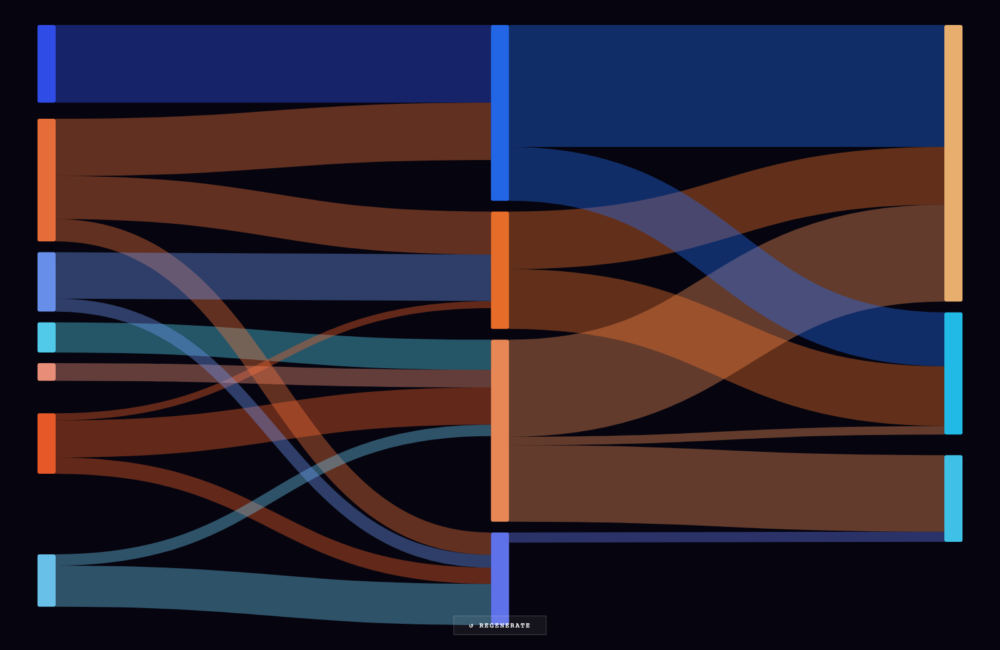

2026_exp/vis · sankey
Generative Sankey
2026_exp/vis/v7_generative_sankey.html
Generative Sankey — 2026_exp/vis; grouped under Graphs / Flows / Networks. Signals: d3, graphs-flows-networks, sankey, svg.
Upgrade notes: Add family-level palette bridge and shared HUD; consider glyph-capable variants for node/edge labeling.